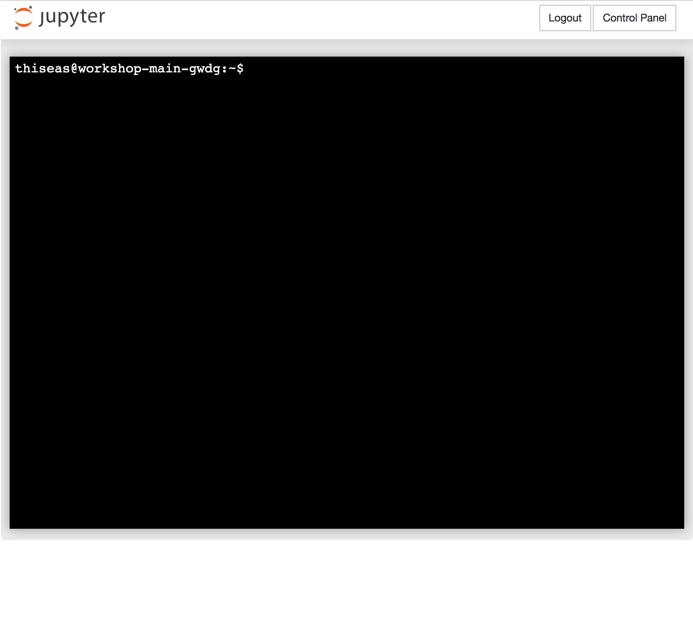

<!DOCTYPE html>
<html>
  <head>
    <title>Basic Bare Bones Bash</title>
    <meta charset="utf-8">
    <style>
      @import url(https://fonts.googleapis.com/css?family=Ubuntu+Mono:400,700,400italic);
      @import url(https://fonts.googleapis.com/css?family=Roboto:300,300i,400,400i,700);
      @import url(https://fonts.googleapis.com/css?family=Roboto+Slab:300,300i,400,400i,700);
      @import url(https://fonts.googleapis.com/css?family=Raleway:300,300i,400,400i,700);


      /* font/size formatting */
      body { 
        font-family: 'Raleway', sans-serif;
        font-weight: 300;
        color: #000000;
      }
      
      h1 {
        font-family: 'Roboto Slab', sans-serif;
        color: #7570b3;
        font-weight: 400;
        font-size: 40px;
      }

      h2 {
        font-family: 'Roboto Slab', sans-serif;
        font-weight: 400;
        font-size: 30px;
        color: #7570b3;
      }

      h3 {
        font-family: 'Raleway', sans-serif;
        color: #7570b3;
      }

      /* improve font size modifications - https://github.com/yihui/xaringan/wiki/Font-Size */

      .huge { font-size: 160% }
      .large { font-size: 130% }
      .small { font-size: 70% }
      .tiny{font-size: 40%}

      /* https://github.com/gnab/remark/issues/305#issuecomment-403309989 */
      blockquote {
        border-left: 0.3em solid #ccc;
        padding: 0 15px;
        font-style: italic;
        color: #777;
        quotes: "\201C""\201D""\2018""\2019";
        font-size: 18px;
      }

      .remark-code, .remark-inline-code { 
        font-family: 'Ubuntu Mono'; color: grey;
      }
      
      /* Two-column layouts */
      .left-column  { width: 49%; float: left; }
      .right-column { width: 49%; float: right; }

      .left-column-33  { width: 33%; float: left; }
      .right-column-66 { width: 66%; float: right; }

      .left-column-66  { width: 66%; float: left; }
      .right-column-33 { width: 33%; float: right; }

      .right-column ~ p { clear: both; }
      .right-column ~ ul { clear: both; }

      /* use with e.g. <div class=vertical-center"> */
      .vertical-center {
         margin: 0;
         position: absolute;
         top: 50%;
         -ms-transform: translateY(-50%);
         transform: translateY(-50%);
      }


      .vertical-center-with-title {
         margin: 0;
         position: absolute;
         top: 60%;
         -ms-transform: translateY(-50%);
         transform: translateY(-50%);
      }


      /* For progress bar */
      .remark-slide-number {
        position: inherit;
      }

      .remark-slide-number .progress-bar-container {
        position: absolute;
        bottom: 0;
        height: 4px;
        display: block;
        left: 0;
        right: 0;
      }

      .remark-slide-number .progress-bar {
        height: 100%;
        background-color: #6a3d9a;
      }

    /* Header and Footer from 
    https://github.com/gnab/remark/issues/501#issuecomment-392961900/ 
    */

    div.my-header {
      background-color: #7570b3;
      position: fixed;
      top: 0px;
      left: 0px;
      height: 10px;
      width: 100%;
      text-align: left;
    }

    div.my-footer img {
      height: 75px;
      width: 75px;
      bottom: 5px;
      right: 5px;
      position: fixed;
    }

  /* Comment  */
  .remark-slide-content { 
    font-size: 20px; 

  }


    </style>
  </head>
  <body>
    <textarea id="source" bar>

layout: true
<div class="my-header"></div>
   <div class="my-footer"></div>


---

class: center, middle
### .tiny[The following slides are adapted from:]
# .tiny[_Basic_ Bespoke]
# .large[**Bare Bones Bash**]
## .tiny[Brought By Blissfully Baffled Bioinformaticians]

Thiseas C. Lamnidis

James A. Fellows Yates
<br/>

<a rel="license" href="http://creativecommons.org/licenses/by-sa/4.0/">
  
</a>
.small[<br />This work is licensed under a <br/> <a rel="license" href="http://creativecommons.org/licenses/by-sa/4.0/">Creative Commons Attribution-ShareAlike 4.0 International License</a>.]

---

# Who am I?

.left-column[
### ~~Yoshi~~ Thiseas 

- BSc. @ <br>Department of Biology (York)

- MSc. @ <br>Department of Anthropology (Durham)

- Ph.D.(?) @ <br>Department of Archaeogenetics (Jena)

]

.right-column[
<div class="vertical-center-with-title">
  
</div>
]

???
I don't have any computational background!

---

# How did I get here?

How did I learn to do everything you're about to learn?

- Being lazy

--

- Google

--

- Talking to others about "life hacks"

--

- Metric tons of TRIAL AND ERROR (tears, manic screaming, blood...)

???
Better to code sth in 4x the time it takes to do it manually, if it saves you 1000x the time in the long run!

Plus, if you apply what you will learn these two days, you can hopefully saving others from having to rerun everything from scratch to replicate your work!

This will save humanity countless hours!

---

# Aims of this session

- **Aims:**

  - To get you comfortable enough with the terminal to try it out
  - Make your work more efficient by using code:
        - Save time!
        - Make your work more reproducible!
        - Eliminate human error!
        - Look like a ~~computer nerd~~ really cool!

--
<br>

- **Objectives:**

  1. What is a terminal?
  2. How to navigate around your computer with the terminal?
  3. How to interact with text files?
  4. How to combine multiple programs into a single command?
  5. How to save file space with shortcuts

---

class: center

<p align="left"></p>

???
What you see here is the "command prompt". username@server:pwd$
me, at the workshop server. ~ means "my HOME directory" (user specific). 

---

class: middle, center

# Always mind the $!

<p align="center"></p>

???
in Bash ALWAYS MIND THE $. Only copy after the $ so you dont paste the command prompt too. $ is also important when dealing with variables.

---

# Navigating the maze

`pwd` stands for "__p__rint __w__rite __d__irectory" 
```bash
$ pwd
```
???
As we mentioned, _~_ is your _home directory_. But where _is_ your home?
--

```
/home/thiseas
```
???
This prints the entire "filepath" of the directory i.e. the route from the "root" 
(a specific directory on the machine), through every subdirectory, leading to your 
particular folder. 

Each user has their own home directory!

---

# Let's talk about paths!

.left-column-66[
While walking around downtown Jena, you feel a rumble in your belly, and feel a craving that only a _currywurst with sweet potato fries_ can fulfill. 

You look around and see a stranger sitting under __the statue of Kurfürst Johann Friedrich.__ You approach the stranger and ask them for directions to Fritz Mitte!]

.left-column-33[<p align="right"> <figcaption align="right">Photo by C. Loeser. CC-BY</figcaption></p>
]

---

# Absolute paths

.left-column-66[
The location of a file or folder, __from the “root” directory__ (`/`).

]

.right-column-33[
<p align="center">
   
  <figcaption align="right">Photo by Igor Slovak. CC-BY-SA</figcaption>
</p>
]

--

.left-column-66[

Equivalent to getting directions to Fritz Mitte, from Jentower (the de facto landmark in Jena).


>___“From Jentower, cross Leutragraben and turn right. You will see FM 100m ahead!”___
<p align="right"><i>Kind stranger, 2019</i></p>
]


???
These directions are true no matter where in town you happen to be.

--

.left-column-66[

__Example of an absolute path:__
```
/home/thiseas
```
]
???
__Absolute__ paths always start with `/`. Paths starting with `~` are also absolute paths, since `~` translates to the absolute path of your specific home directory. That is the directory path you see in the output of the `pwd` command you just ran.


---

# Relative paths

.left-column-66[
The location of a file or folder, __from your current directory.__
]

.right-column-33[
<p align="right">
   
  <figcaption align="right">Photo by Andreas Praefcke. CC-BY</figcaption></p>
]

--

.left-column-66[

Equivalent to getting directions to Fritz Mitte from your current location.

>___“Go down that road, turn left, then keep going straight until you see it!”___
<p align="right"><i>also Kind stranger, 2019</i></p>

]

???
These directions are easier to follow, but only work if you begin AT MARKTPLATZ.

--

.left-column-66[
__Example of a relative path:__
```
./../Documents/Memes/Pepe.png
../Documents/Memes/Pepe.png
```
]
???
__Relative__ paths are always relative to your working directory (i.e.
  your current directory). Often this type of path will begin with one (`./`) 
  or two (`../`) dots followed by a forward slash. 

In the syntax of relative paths `.` means "the current directory" and `..` means "the parent directory" (or the 'one above'). 

---

# The contents of a directory

`ls` is shorthand for **l**i**s**t. 

```bash
$ ls

```
???
Now let's look around at our current location and see what we can find within 
our home directory.

`ls` is shorthand for "list". It will (surprise surprise) list the contents of the current directory.

This will produce no output, since your current directory is empty. Let's change that!
--
<br><br>
`mkdir` is shorthand for "**m**a**k**e **dir**ectory".

```bash
$ mkdir ~/BBB
$ ls ~
```
???
You can make a new empty directory using the command `mkdir`, shorthand for 
"**m**a**k**e **dir**ectory".

--
```
BBB
```
Now that your home directory is not empty, `ls` has output!
???
Also notice that if we provide a path to `ls`, it will list the contents of the given directory.

---

# Directory Management

__However, `BBB` is not a very descriptive name.__

???
In two years when you start looking through these folders `BBB` won't mean much and you will likely go like this. (click)

--

<p align="center"></p>

--

**Important:** keep your corner of the computer well organised!
- The trick: make own directories. 
- Often, _a lot_ of them. 

--

But don't lose hope, as we can rename things with the `mv` command, 
shorthand for "**m**o**v**e". 

```bash
$ mv ~/BBB BareBonesBash

```
???
In fact move, as the name suggests, will move a file/folder into a new location, 
also renaming it in the process if necessary. It works by typing `mv`, the old 
location and a target location.

__Can you tell me what type of path each argument to the command used is?__

---
# Directory Management

```bash
$ ls
```
```
BareBonesBash
```
--
<p align="center">
  
</p>

???
Wait... This isn't BareBonesBash. It's RRDM! Let's just delete that empty directory and start over.
--
`rmdir` is short for "**r**e**m**ove **dir**ectory"
???
__rmdir only works on EMPTY directories!__
--

```bash
$ rmdir ~/BareBonesBash
$ ls
```
???
Now your home directory is empty again.

---

# From the beginning...

<p align="center">
  
</p>

--
```bash
$ mkdir ~/ReproducibleResearchDataManagement/IntroToBash
```
--
```
mkdir: cannot create directory ‘~/ReproducibleResearchDataManagement/IntroToBash’: No such file or directory
```
???
By default, bash will try to create the directory specified. But this will fail when making nested directories where the parents don't exist!
--

```bash
$ mkdir -p ~/ReproducibleResearchDataManagement/IntroToBash
$ ls
```
???
The `-p` is called a FLAG or OPTION. `-p` stand for PARENT and tells the computer to make the given directory AND ALL directories lesding to it, if they do not exist.
--
```
ReproducibleResearchDataManagement
```
Much better!

---

# Navigating the file system
`cd` is short for "__c__hange __d__irectory".

```bash
$ cd ReproducibleResearchDataManagement
$ ls
```
```
IntroToBash
```
???

Now that we have our directory, we should move into it. 
--
???
You can see that your current directory has changed on your command prompt! (or you can use `pwd`).

`ls` now lists the contents of the RRDM directory, which has IntroToBash in it!
--

<br>
To move to the parent directory of your current location:
```bash
$ cd ..
```
--

```bash
$ cd ~/ReproducibleResearchDataManagement/IntroToBash
```
???
You can also use an abosolute path to move to a directory:

---

class: center,middle
# Playing with the files, one bit at a time

---

# Time to play!


Now we have a place to organise our files... but no files :(
???
So we will be downloading some publicly available data!


--
<p align="center">
  
</p>

<br/>
.huge[**Lets play with some Mammoths!**]

---

# Downloading files

We are going to download a FASTQ file from the ENA (European Nucleotide Archive). This should be pretty quick!
<p align="center">
  
</p>
???
The data we will use are sequenced pieces of mtDNA from Mammoths!

For all intents and purposes of this session, this file is just a text file.

--

```bash
## Download!
### Linux/Windows
$ wget ftp.sra.ebi.ac.uk/vol1/fastq/ERR202/001/ERR2020601/ERR2020601.fastq.gz
### Mac
$ curl -LO ftp.sra.ebi.ac.uk/vol1/fastq/ERR202/001/ERR2020601/ERR2020601.fastq.gz
$ mv ERR2020601.fastq.gz ERR2020601.fastq.gz.Z

## Then to check if the file is now in our working directory
$ ls
```
???
Notice how I have used comments to explain what the different sections of the code do!

---

# Meow 

.left-column[
  - `cat` is short for "con**cat**enate".

  - Used to print the 
contents of a file to the screen.
]

.right-column[
<p align = "center">
 
</p>
]

???

Lets try this with our newly downloaded file.

--


.left-column[
```bash
$ cat ERR2020601.fastq.gz
```
]

<br/>

> **BONUS TIP TIME!** Never type a full filename! Start typing, then press <TAB> to autocomplete! No more pesky typos!

---

# Oh...

.left-column[
- You probably had a bunch of junk printed to screen or nothing displayed 
  - just press enter to cancel

```
��'��x��xI��-�����2��u�_SuY�9A�}W.��
Zf��?���}H����9�Kɰ�
����l�B��stݹlfDt������-L��|x:�MU
tI����u�1������"d�H
```
  ]

--

.right-column[
<p align="center">
  
</p>
> Looks like curiosity killed the `cat`!
]

--

<br/>
- That's because the FASTQ file is _compressed_ 
  - As with almost all FASTQs 
  - Also most large text files
  - as indicated by the `.gz` (`.gz.Z` for Mac users)


---

## Viewing the gz

To view the _human readable_ contents of the file, we 
can instead use `zcat`. Don't forget your auto-complete!

--

```bash
$ zcat ERR2020601.fastq.gz

```
???
You still got a bunch of junk printed on your screen, but this time it's the junk we wanted! 
--

```
@ERR2020601.147099 F_AHSTEUER006:166:C5UJMANXX:8:2109:2222:68258/1
TCTGCGTCCGTCATATCTATTGCCCAGTCACTAGTCACTAGTCA
+
3:3AAEFGGGGGGGGGGGEGGCDGGGBGGGGGFGFGEGGGGGGG
@ERR2020601.147100 F_AHSTEUER006:166:C5UJMANXX:8:1315:17303:82366/1
TGGTCGCTGCCGCGAGCGGATTCCTGCTGA
+
3B=@BECGGGGGGGGGGGGGGGGGGGGGGG
```
<br/>
Much better, now we see DNA sequences! 

--

> **BONUS TIP TIME!** try pressing `ctrl+l`, which will clear your terminal of 
> all the junk that was printed to your screen. This does NOT delete those lines, 
> it simply scrolls down for you. You can still find all your previous work if
> you scroll up.

---

## Yeah, but what EXACTLY is compression?

.left-column[
- Compression is a way of saving hard-disk space
  - finds common patterns and replace with a smaller (repeated)-value
  - later translated back (decompression)
]

???
THISEAS

--

.right-column[
<p align="center">
  
<p>
]

--

For example - take a time machine back to 2001, when having one of 
these...

--

.left-column[
<p align="center">
  
</p>
]

.right-column[
...made you instantly popular and better geared than James Bond 

.small[_\[tech-savvy Pierce Brosnan, not the trigger-happy Daniel Craig]_]
]

---

# Muzak!

.left-column-66[
This iPod had a space of 5GB
 - Average uncompressed album: 640MB
 - Fits: 7.8125 Albums  
 - Songs per Album: 20  .small[\[_because Thiseas just listens to Disney soundtracks..._\]]
 - Total songs: 60
]

.right-column-33[
<p align="center">
  
</p>
]

--

_But I had 800 songs, and still had space_ - we hear you call?
- Because of compression!
- MP3 is a another type of compression specifically for music files

---

class: center,middle
# Ok cool, but back to computers...

---

# Asking the computer for help (it loves helping people)

How to find out how much less space our FASTQ takes up because of compression? 
  - Let's ask the computer to help us find a way! 

First - how to find out what a program does? Ask `whatis`!

```bash
$ whatis man
```

--

```
man (1)              - an interface to the on-line reference manuals
```

.left-column-33[

<br/>
<br/>
Wait... what is this? MANUALS!? OMG!?


]

.right-column-66[
<p align="center">
  
</p>
]

---

Now we can read what zcat does!

```bash
$ man zcat

```

--

```
GZIP(1)                     General Commands Manual                    GZIP(1)

NAME
       gzip, gunzip, zcat - compress or expand files

SYNOPSIS
       gzip [ -acdfhklLnNrtvV19 ] [--rsyncable] [-S suffix] [ name ...  ]
       gunzip [ -acfhklLnNrtvV ] [-S suffix] [ name ...  ]
       zcat [ -fhLV ] [ name ...  ]

DESCRIPTION
       Gzip  reduces  the  size  of  the  named  files using Lempel-Ziv coding
       (LZ77).  Whenever possible, each file  is  replaced  by  one  with  the
       extension .gz, while keeping the same ownership modes, access and modi‐
       fication times.  (The default extension is -gz for VMS,  z  for  MSDOS,
       OS/2  FAT, Windows NT FAT and Atari.)  If no files are specified, or if
       a file name is "-", the standard input is compressed  to  the  standard
       output.  Gzip will only attempt to compress regular files.  In particu‐
       lar, it will ignore symbolic links.

```

- To navigate:
  - Scroll up and down with arrow keys
  - Quit press `q` on your keyboard

Scroll until you see `OPTIONS` - what does `--list` do?

---

# Oooooooh

The option `--list`/`-l` lists 
  - the size of a file in both compressed and uncompressed form
  -as well as the compression ratio (how effective the 
compression was). 

--

**Most programmes you will use DO have a `man` page, making this command 
extremely useful.**.

--

Lets try our new found knowledge!

```bash
$ gzip -l ERR2020601.fastq.gz

```
--
```
         compressed        uncompressed  ratio uncompressed_name
             217232              864983  74.9% ERR2020601.fastq
```
<br/>

Not bad! Our file 25.1% the size of the uncompressed file would.

---

class: center,middle
# Laziness 101: Minimising our work by maximising the work of the computer

### Text Editing in the Terminal

---

# One sample ain't enough


<p align="center">
  
</p>

Lets get 7 more!

???

One sample rarely gets you the high impact paper your supervisor lusts over anymore

--

But typing the same `wget` command over and over isn't being lazy!

--

Instead, we can supply `wget` a text file, with the link to each new FASTQ file.

```bash
$ wget -i <LIST_OF_URLS>.txt
```
---

# Text editing

.left-column-66[
But how can we make this file? 
]

--

.right-column-33[
<p align="center">
  
</p>

]


.left-column-66[
If you're absolutely insane you may look up `vim` 
.small[_\[Thiseas' poison\]_]

Or we can use `nano` which is much more user friendly.
]

--

<br/>
<br/>
<br/>
<br/>
<br/>
<br/>
<br/>
<br/>


- `nano` is a text editor
  - Similar to `TextMate`, `gedit` or `notepad`
  - But runs in your terminal
  - Main difference: how you 'save', 'close' etc.
  - These are controlled with special key combinations 
      - e.g. ctrl + c to copy text in word


---

# Lets do eet!

So open up the program with

```bash
$ nano
```
--

- Try typing something!
- Look at the bottom of the window
  - These correspond to different commands (save, exit, etc.)
  - `^` corresponds to your `ctrl` or `cmd` keys on your keyboard

- Move around with your arrow keys.

--

- To save the contents of your file
  1. Initiate exit with `ctrl + x`
  2. You will be prompted to 'Save modified buffer'.
  3. Press `y` on your keyboard to agree
  4. Set the file name as `~/BareBonesBash/Ftp.Link.txt`
  5. Press `enter` to save

All done!

---

# Not ANOTHER typo!?

Check that the file was successfully generated.

```bash
$ cd ~/BareBonesBash/
$ ls

```
--

Great! There is a file there! But OH NO! We want to have multiple _links_ not a Link!

<p align="center">
  
  
</p>

Lets remove that file, and start again. 

---

# Delete...

.left-column[
So far, we learnt `rmdir` to remove a directory. 

To remove a file, we can instead use `rm` for – you guessed it! – **r**e**m**ove. 
]

--

.right-column[
<p align="center">
  
</p>
]

.left-column[

```bash
$ rm Ftp.Link.txt
$ ls
```
<br/>

And it's gone!
]

---

# Anyway...

Now we've fixed our typo 

1. Open `nano` again
2. Go to [https://tinyurl.com/BBB-FtpLinks](https://tinyurl.com/BBB-FtpLinks) in your .small[\[_real life_\]] internet browser
3. Copy the text on the webpage
4. .small[\[_back down the bash rabbit hole_\]] paste the text into `nano`

> Note the `#`, this means the line is **commented out** as we've already downloaded this file!

???
This is an example of a programme that understands # as a comment in its input!

--

.left-column-66[
So again to recap exiting and save a file in nano we do the following dance: 
  1. Initiate exit with `ctrl + x`
  2. You will be prompted to `Save modified buffer`.
  3. Press `y` on your keyboard to agree
  4. Set the file name as `~/BareBonesBash/Ftp.Links.txt`
  5. Press `enter` to save
]

.right-column-33[
  <p align="center">
  
</p>
]

---

# Did it save?

How can we check that the links saved correctly?

--

<p align = "center">
 
</p>


```bash
$ cat ~/BareBonesBash/Ftp.Links.txt

```

--

```
ftp.sra.ebi.ac.uk/vol1/fastq/ERR202/009/ERR2020609/ERR2020609.fastq.gz
ftp.sra.ebi.ac.uk/vol1/fastq/ERR202/001/ERR2020611/ERR2020611.fastq.gz
ftp.sra.ebi.ac.uk/vol1/fastq/ERR202/007/ERR2020567/ERR2020567.fastq.gz
ftp.sra.ebi.ac.uk/vol1/fastq/ERR202/005/ERR2020565/ERR2020565.fastq.gz
#ftp.sra.ebi.ac.uk/vol1/fastq/ERR202/001/ERR2020601/ERR2020601.fastq.gz
ftp.sra.ebi.ac.uk/vol1/fastq/ERR202/003/ERR2020613/ERR2020613.fastq.gz
ftp.sra.ebi.ac.uk/vol1/fastq/ERR202/008/ERR2020618/ERR2020618.fastq.gz
ftp.sra.ebi.ac.uk/vol1/fastq/ERR202/007/ERR2020617/ERR2020617.fastq.gz
```

---

# Zoom zoom zoom!

Now to download all the files stored in the URLs. IN ONE GO! 

<p align="center">
  
</p>

--

As before: 
  - give a file to `wget` with URLs with the flag `-i`, for "**i**nput". 

```bash
$ cd ~/BareBonesBash
$ wget -i ~/BareBonesBash/Ftp.Links.txt

```

<p align="center"><b> One at a time!</b> .small[_\[Last time we DDoS'd the ENA\]_ 😅] </p>

---

class: center,middle

# The road so far

???
JAMES
---

# Woohoo!

Well done **you** for putting up with an inordinate amount of internet memes, gifs, terrible pop-culture, and video game references!

<br/>
<p align="center">
   
  
</p>
<br/>
--

You should now feel more comfortable:
  - How to move around using the Terminal, 
  - Using basic commands to view, create, and manipulate files and directories.

---

# Enter the janitor!

Despite being lazy - you should ALWAYS keep your room tidy.

- This stops losing files
- Prevents getting lost in a maze of directories
- Accidently permanently deleting a days worth of work .small[

\[_don't ask how many times this has happened._\]]

--

.left-column[
Lets remove:
  - the  `~/BareBonesBash` directory 
  - **all of its contents**. 

```bash
$ cd ~     # Don't delete a directory 
         # while we are still in it! 
$ rm -r ~/BareBonesBash
```
]

--

.right-column[
<p align="center">
  
</p>
]

---

# Thanks to...

- James Fellows Yates
  - my partner in this crime.
  
- Aida Andrades Valuteña
  - for suggestions/ideas
  - telling us off.

- [Google](https://google.com)
  - Pretty much teaching all of this

- [giphy](https://giphy.com/), [tenor](https://tenor.com)
  - For procrastination

- [fontawesome.com](https://fontawesome.com/) 
  - for icons for making the logo


    </textarea>
    <script src="https://remarkjs.com/downloads/remark-latest.min.js">
    </script>
    <script>
      var slideshow = remark.create({
      /*ratio: "16:9", from: https://github.com/gnab/remark/issues/86#issuecomment-36157045*/
      slideNumberFormat: (current, total) => `
        <div class="progress-bar-container">
          <div class="progress-bar" style="width: ${current/total*100}%">
          </div>
        </div>
      `
    });
    </script>
  </body>
</html>
